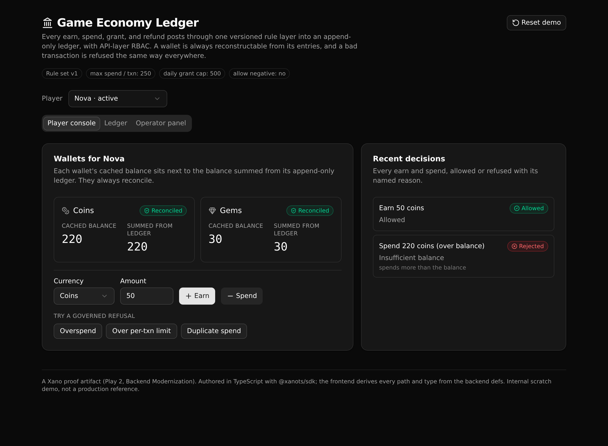

Game Economy Ledger Backend
One governed rule layer for a game's virtual currency. Every earn, spend, grant, and refund posts through versioned rules into an append-only ledger, with API-layer RBAC.

What it demonstrates
A studio usually accumulates economy logic in scattered places, where each mini game and store screen enforces its own balance checks and its own caps. This pulls that logic into one readable API layer a backend engineer can point at and trust.
- Balance sufficiency. A spend a wallet cannot cover is refused, unless the rules allow a negative balance.
- Per-transaction limit. A spend over the configured ceiling is refused.
- Daily grant cap. An operator grant past the rolling 24 hour cap is refused.
- Duplicate guard. Every write carries an idempotency key, so a retry cannot post twice.
- Refund reversal. A refund reverses one spend exactly once; a second refund of it is refused.
- API-layer RBAC. Grant, refund, and the audit log require an operator token. A player token gets 403, an anonymous request 401. This is API-layer access control, not row-level security.
The ledger is append-only, and each entry records the rule version that authorized it, so a past decision stays explainable. The balance endpoint returns each wallet's cached balance next to a balance summed from its entries, which proves the two always reconcile.
Three screens
Player console
Both wallets, cached balance next to the ledger-summed balance, with earn and spend and one-click refusal scenarios.
Ledger view
The append-only entries, newest first, each with its kind, signed amount, balance after, and rule version.
Operator panel
Sign in, grant, refund, and read the audit log. Watch a player token and an anonymous request get refused.
API surface
| Verb | Path | What it enforces |
|---|---|---|
| POST | api:economy/seed | Resets to a known demo state |
| POST | api:auth/login | Verifies credentials, mints a token, returns the role |
| GET | api:auth/me | The current user and role (token required) |
| GET | api:economy/balance | Cached balance next to the ledger-summed balance |
| GET | api:economy/ledger | A player's append-only entries, newest first |
| POST | api:economy/earn | Credits currency, with the duplicate guard |
| POST | api:economy/spend | Debits currency: balance, per-txn limit, idempotency |
| POST | api:economy/grant | Operator only; enforces the rolling daily grant cap |
| POST | api:economy/refund | Operator only; reverses a spend once, never twice |
| GET | api:admin/audit | Operator only; every allowed and rejected action |
Use this template
Clone it and get a live governed backend in a minute. You need Node 20 or newer and a Xano account.
git clone https://github.com/xano-scratch/game-economy-ledger-backend cd game-economy-ledger-backend npm install npx xanots login npm run xano:deploy
Or hand the whole thing to an AI builder with a prompt like this:
Clone https://github.com/xano-scratch/game-economy-ledger-backend and run it: `npm install`, then `npx xanots login`, then `npm run xano:deploy`. It deploys a governed game-economy backend (append-only ledger, versioned rules, API-layer RBAC) plus a React frontend, and prints a live URL. Then help me add a new rule to economy_rules and enforce it in the spend endpoint.
Live preview
npm run xano:deploy to get a fresh live URL in
under a minute.